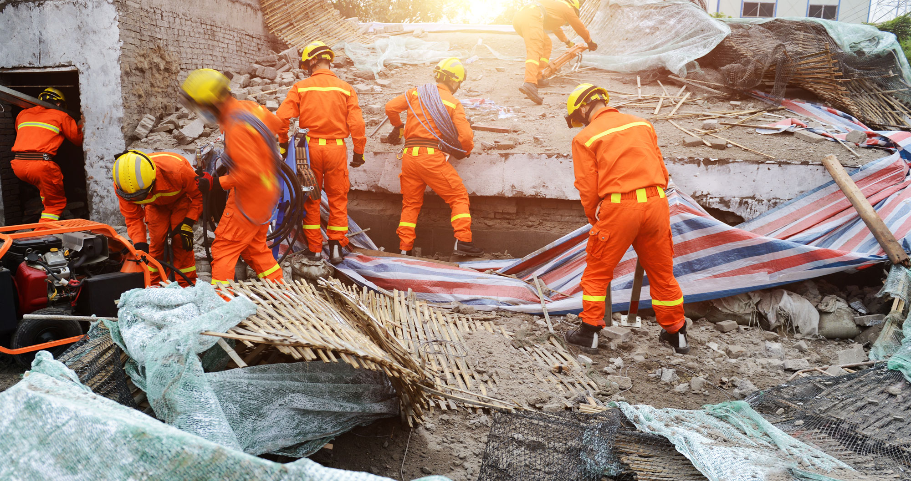

Understanding Earthquakes

An earthquake is the sudden shaking of the ground
caused by movement within the Earth's crust. Earthquakes
can vary in strength and may occur with little or no
warning.
Strong earthquakes can damage buildings, roads,
bridges and other infrastructure. They can also
disrupt electricity, communication and transportation
systems, making emergency response more difficult.
Earthquakes may also trigger secondary hazards such
as landslides, fires and, in some coastal areas,
tsunamis. The impact depends on factors such as the
earthquake's strength, depth, location and the
vulnerability of surrounding communities.
Emergency Response
After an earthquake, emergency services and rescue
teams may work to locate and assist people who are
trapped or injured. Communities may also organize
temporary shelters and distribute essential supplies.
Communication is especially important following an
earthquake. People should follow instructions from
emergency authorities and avoid damaged buildings
or areas that may be unsafe.
Recovery can take considerable time. Repairing
infrastructure, restoring essential services and
helping affected families are important parts of the
recovery process.
Earthquake Preparedness
Preparing before an earthquake can help reduce risks.
Families and communities can identify safe places,
prepare emergency kits and learn evacuation procedures.
Heavy furniture and objects should be secured where
appropriate to reduce the risk of them falling during
strong shaking. It is also useful to know how to
turn off utilities if authorities recommend doing so.